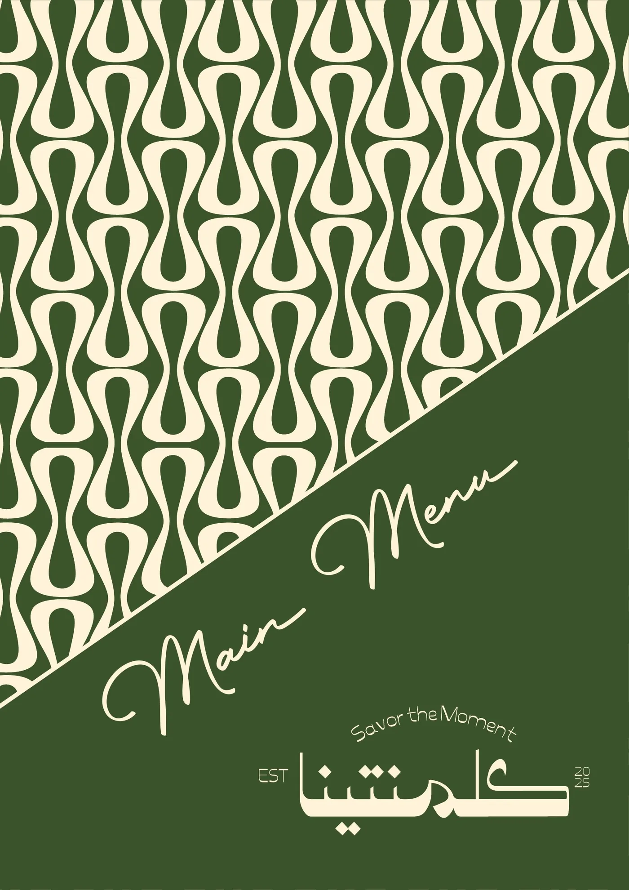

قائمة الطعام · أفقية
Dobamina

امسح للفتح مباشرةالرمز يفتح المنيو على جوالك بدون بحث
اطبع · امسح · اطلب
دليل الطلب السريع
قائمتان جاهزتان للفتح على أي جوال أو شاشة. اختر المنيو، أو امسح الرمز الموجود بجانبه وابدأ الطلب فوراً.
اختر قائمتك
02 / 02
قائمة الطعام · أفقية

قائمة الطعام · رأسية